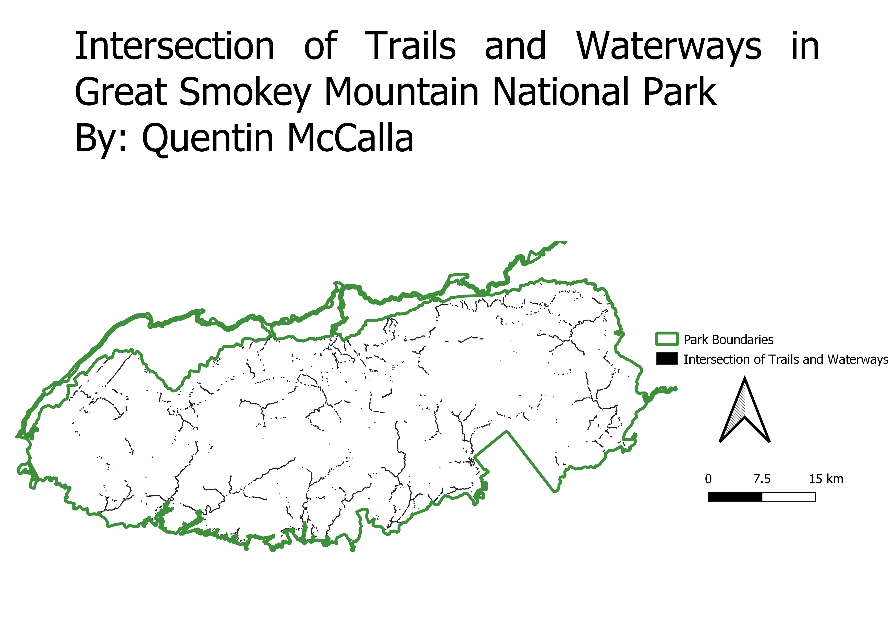
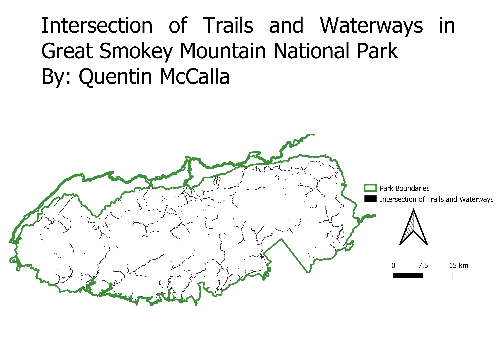

Where are park visitors most likely to influence and impact the waterways of Great Smoky Mountain National Park?
Quentin McCalla
This map shows the intersection of trails and waterways in GSMNP. This is useful because the majority of human caused damages will be
concentrated on or near trails.
Procedures
1. I created a 25 meter buffer around trails in the park. This is because I figured that most human caused disturbances (trash, erosion etc) will be within that range of the trails.
2. I then created a 25 meter buffer around the waterways in the park. I did this because I think that any trash or human caused damages within this range
reasonably have the potential to harm the waterway.
3. I took the intersection of the 2 buffers listed above. I interpret this area as the area where humans are most likely to come in contact with and have
the ability to alter the waterways in the park.
 

Data used for this project
Intersection shapefile
Link to Data site